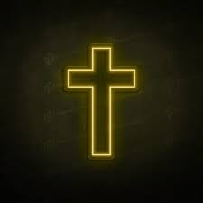

Jesus
Jesus is the son of god, he is in many religions, for example, Jewish. At the time, everyone thought Jesus was a bad person so they put him in a crucifix.

A crucifix is a torture punishment of where the victim will have his hands and head nailed onto a cross, this was how Jesus "died".
However, he came back alive in his tomb, a cave sealed with a heavy boulder. And that is why we celebrate Easter, to remember his sacrifice for his people.